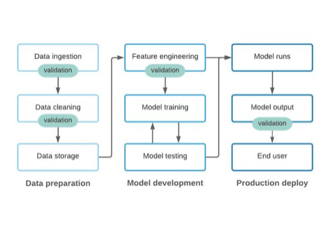

Why data quality is key to successful ML Ops

Are you testing your data in your data pipeline 🧪?
We know that garbage in = garbage out, and we also know that data scientists (unfortunately) spend 65% of their time on data cleaning. Then, surely, data validation is an even more important step to make sure all that effort is not being eroded by poor data quality?
From the post: ❝ bad data can backfire twice — first when training predictive models and second in the new data used by that model to inform future decisions. ❞
💣 So, are you testing your data?
If not, check out this great post by Great Expectations on #datavalidation and #MLOps. Link in comment.
🌟 Original Post by Great Expectation on: Why data quality is key to successful ML Ops